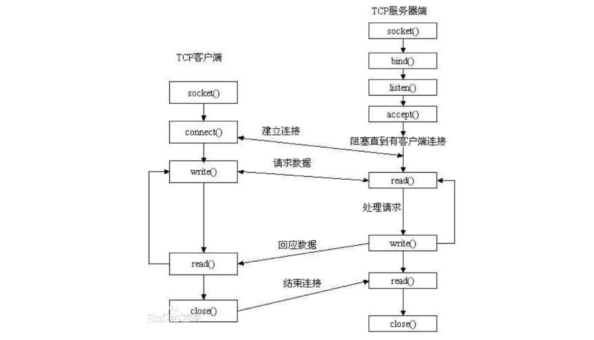
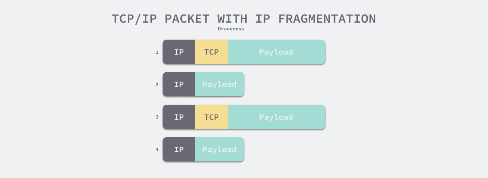
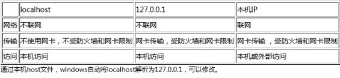

计算机网络
本文最后更新于：20 分钟前
为什么TCP是三次握手而不是两次或者四次
一、资源浪费观点
如果只有两次握手，当客户端的SYN请求连接在网络管道中阻塞，客户端没有接收到ACK报文，就会重新发送SYN，由于没有第三次握手，服务器不清楚客户端是否收到了自己发送的建立连接的ACK确认信号，所以每收到一个SYN就只能主动建立一个连接，这会造成什么情况呢？如果客户端的SYN阻塞了，重复发送多次SYN报文，那么服务器在收到请求后就会建立多个冗余的无效链接，造成不必要的资源浪费。
即两次握手会造成消息滞留情况下，服务器重复接受无用的连接请求SYN报文，而造成重复分配资源。
二、可靠性论断
另外一种是 如果想确定双通道通畅，必须使用三个包的发送接收，也就是三次握手：“这个问题的本质是, 信道不可靠, 但是通信双发需要就某个问题达成一致. 而要解决这个问题, 无论你在消息中包含什么信息, 三次通信是理论上的最小值. 所以三次握手不是TCP本身的要求, 而是为了满足”在不可靠信道上可靠地传输信息”这一需求所导致的. 请注意这里的本质需求,信道不可靠, 数据传输要可靠. 三次达到了, 那后面你想接着握手也好, 发数据也好, 跟进行可靠信息传输的需求就没关系了. 因此,如果信道是可靠的, 即无论什么时候发出消息, 对方一定能收到, 或者你不关心是否要保证对方收到你的消息, 那就能像UDP那样直接发送消息就可以了.”
三次是保证双方互相明确对方能收能发的最低值。理论上讲不论握手多少次都不能确认一条信道是“可靠”的，但通过3次握手可以至少确认它是“可用”的，再往上加握手次数不过是提高“它是可用的”这个结论的可信程度。另外Tcp的可靠传输更多的是靠重传机制来保证的
三、初始序列号
三次握手的本质是为了同步双方的初始序列号：
为了实现可靠数据传输， TCP 协议的通信双方， 都必须维护一个序列号， 以标识发送出去的数据包中， 哪些是已经被对方收到的。 三次握手的过程即是通信双方相互告知序列号起始值， 并确认对方已经收到了序列号起始值的必经步骤。如果只是两次握手， 至多只有连接发起方的起始序列号能被确认， 另一方选择的序列号则得不到确认。TCP建立连接的握手，实质上就是建立一个双向的可靠通信连接，一边一个来回，每一边都自带超时重传来确保可靠性(而不是靠握手的次数)。TCP的3次握手是优化的结果，其实它应该是4次握手，由于是从零开始的建立连接，因此将SYN的ACK以及被动打开的SYN合并成了一个SYN-ACK。
握手的作用，旨在确定两个双向的初始序列号，TCP用序列号来编址传输的字节，由于是两个方向的连接，所以需要两个序列号，握手过程不传输任何字节，仅仅确定初始序列号。
为什么TCP4次挥手时等待为2MSL？
主动断开的一侧为A，被动断开的一侧为B。
第一个消息：A发FIN
第二个消息：B回复ACK
第三个消息：B发出FIN
此时此刻：B单方面认为自己与A达成了共识，即双方都同意关闭连接。
此时，B能释放这个TCP连接占用的内存资源吗？不能，B一定要确保A收到自己的ACK、FIN。
所以B需要静静地等待A的第四个消息的到来：
第四个消息：A发出ACK，用于确认收到B的FIN
当B接收到此消息，即认为双方达成了同步：双方都知道连接可以释放了，此时B可以安全地释放此TCP连接所占用的内存资源、端口号。
所以被动关闭的B无需任何wait time，直接释放资源。
但，A并不知道B是否接到自己的ACK，A是这么想的：
1）如果B没有收到自己的ACK，会超时重传FiN
那么A再次接到重传的FIN，会再次发送ACK
2）如果B收到自己的ACK，也不会再发任何消息，包括ACK
无论是1还是2，A都需要等待，要取这两种情况等待时间的最大值，以应对最坏的情况发生，这个最坏情况是：
去向ACK消息最大存活时间（MSL) + 来向FIN消息的最大存活时间(MSL)。
这恰恰就是2MSL( Maximum Segment Life)。
等待2MSL时间，A就可以放心地释放TCP占用的资源、端口号，此时可以使用该端口号连接任何服务器。
为何一定要等2MSL？
如果不等，释放的端口可能会重连刚断开的服务器端口，这样依然存活在网络里的老的TCP报文可能与新TCP连接报文冲突，造成数据冲突，为避免此种情况，需要耐心等待网络老的TCP连接的活跃报文全部死翘翘，2MSL时间可以满足这个需求（尽管非常保守）！
C/S 和 B/S 模式的区别与联系
C/S与B/S的定义、
- C/S (Client/Server)结构，即大家熟知的客户机和服务器结构。它是软件系统体系结构，通过它可以充分利用两端硬件环境的优势，将任务合理分配到Client端和Server端来实现，降低了系统的通讯开销。
- B/S（Browser/Server）结构即浏览器和服务器结构。它是随着Internet技术的兴起，对C/S结构的一种变化或者改进的结构。在这种结构下，用户工作界面是通过WWW浏览器来实现，极少部分事务逻辑在前端（Browser）实现，但是主要事务逻辑在服务器端（Server）实现，形成所谓三层3-tier结构。这样就大大简化了客户端电脑载荷，减轻了系统维护与升级的成本和工作量，降低了用户的总体成本（TCO）。
优缺点
C/S模式
1.C/S模式将应用与服务分离,系统具有稳定性和灵活性
2.C/S模式配备的是点对点的结构模式,适用于局域网,有可靠的安全性
3.由于客户端实现与服务器端的直接连接,没有中间环节,因此响应速度快
4.在C/S模式中,作为客户机的计算机都要安装客户机程序,一旦软件系统升级,每台客户机都要安装客户机程序,系统升级和维护较为复杂。
B/S模式
1.系统开发、维护、升级方便
每当服务器应用程序升级时，只要在服务器上升级服务应用程序即可，用户计算机上的浏览器软件不需要修改，系统开发和升级维护方便
2.B/S模式具有很强的开放性
在B/S模式下，用户通过通用的浏览器进行访问，系统开放性好
3.B/S模式的结构易于扩展
由于Web的平台无关性，B/S模式的结构可以任意扩展，可以从包含一台服务器和几个用户的小型系统扩展成为拥有成千上万个用户的大型系统
4.用户使用方便
B/S模式的应用软件都是基于Web浏览器的，而Web浏览器的界面是类似的。对于无用户交换功能的页面。用户接触的界面都是一致的，用户使用方便。
总结
必须强调：C/S和B/S并没有本质的区别：B/S是基于特定通信协议(HTTP)的C/S架构，也就是说B/S包含在C/S中，是特殊的C/S架构。
之所以在C/S架构上提出B/S架构，是为了满足瘦客户端、一体化客户端的需要，最终目的节约客户端更新、维护等的成本，及广域资源的共享。
- B/S属于C/S，浏览器只是特殊的客户端；
- C/S可以使用任何通信协议，而B/S这个特殊的C/S架构规定必须实现HTTP协议；
- 浏览器是一个通用客户端，本质上开发浏览器，还是实现一个C/S系统。
C/S和B/S是当今世界开发模式技术架构的两大主流技术。C/S是美国 Borland公司最早研发，B/S是美国微软公司研发。目前，这两项技术以被世界各国所掌握，这两种技术都有自己一定的市场份额和客户群。
我们不能简单的说是C/S还是B/S好，B／S结构的主要特点是分布性强、维护方便、开发简单且共享性强、总体拥有成本低。但数据安全性问题、对服务器要求过高、数据传输速度慢、软件的个性化特点明显降低，这些缺点是有目共睹的，难以实现传统模式下的特殊功能要求。例如通过浏览器进行大量的数据输入或进行报表的应答、专用性打印输出都比较困难和不便。此外，实现复杂的应用构造有较大的困难。虽然可以用ActiveX、Java等技术开发较为复杂的应用，但是相对于发展已非常成熟C／S的一系列应用工具来说，这些技术的开发复杂，并没有完全成熟的技术工具供使用。只能说两种开发模式各有优缺点和使用的范围：B/S适用于用户群庞大，或客户需求经长发生变化的情况。C/S功能强大，可以减轻服务器端压力，如果用户的需求特别复杂，用C/S。
但是随着Windows将浏览器技术植入操作系统内部，B/S结构已越来越受到欢迎，客户机越来越”瘦”而服务器越来越”胖”是将来软件的主流发展方向。
KeepAlive详解
为什么要有KeepAlive？
链接建立之后，如果应用程序或者上层协议一直不发送数据，或者隔很长时间才发送一次数据，当链接很久没有数据报文传输时如何去确定对方还在线，到底是掉线了还是确实没有数据传输，链接还需不需要保持，这种情况在TCP协议设计中是需要考虑到的。
TCP协议通过一种巧妙的方式去解决这个问题，当超过一段时间之后，TCP自动发送一个数据为空的报文给对方，如果对方回应了这个报文，说明对方还在线，链接可以继续保持，如果对方没有报文返回，并且重试了多次之后则认为链接丢失，没有必要保持链接。
如何开启KeepAlive?
KeepAlive并不是默认开启的，在Linux系统上没有一个全局的选项去开启TCP的KeepAlive。需要开启KeepAlive的应用必须在TCP的socket中单独开启。Linux Kernel有三个选项影响到KeepAlive的行为：
1.net.ipv4.tcpkeepaliveintvl = 75
2.net.ipv4.tcpkeepaliveprobes = 9
3.net.ipv4.tcpkeepalivetime = 7200
tcpkeepalivetime的单位是秒，表示TCP链接在多少秒之后没有数据报文传输启动探测报文; tcpkeepaliveintvl单位是也秒,表示前一个探测报文和后一个探测报文之间的时间间隔，tcpkeepaliveprobes表示探测的次数。
TCP socket也有三个选项和内核对应，通过setsockopt系统调用针对单独的socket进行设置：
TCPKEEPCNT: 覆盖 tcpkeepaliveprobes
TCPKEEPIDLE: 覆盖 tcpkeepalivetime
TCPKEEPINTVL: 覆盖 tcpkeepalive_intvl
举个例子，以我的系统默认设置为例，kernel默认设置的tcpkeepalivetime是7200s, 如果我在应用程序中针对socket开启了KeepAlive,然后设置的TCP_KEEPIDLE为60，那么TCP协议栈在发现TCP链接空闲了60s没有数据传输的时候就会发送第一个探测报文。
TCP KeepAlive和HTTP的Keep-Alive是一样的吗？
估计很多人乍看下这个问题才发现其实经常说的KeepAlive不是这么回事，实际上在没有特指是TCP还是HTTP层的KeepAlive，不能混为一谈。TCP的KeepAlive和HTTP的Keep-Alive是完全不同的概念。
一个完整的HTTP事务，有链接的建立，请求的发送，响应接收，断开链接这四个过程,早期通过HTTP协议传输的数据以文本为主，一个请求可能就把所有要返回的数据取到，但是，现在要展现一张完整的页面需要很多个请求才能完成，如图片,JS,CSS等，如果每一个HTTP请求都需要新建并断开一个TCP，这个开销是完全没有必要的。
开启HTTP Keep-Alive之后，能复用已有的TCP链接，当前一个请求已经响应完毕，服务器端没有立即关闭TCP链接，而是等待一段时间接收浏览器端可能发送过来的第二个请求，通常浏览器在第一个请求返回之后会立即发送第二个请求，如果某一时刻只能有一个链接，同一个TCP链接处理的请求越多，开启KeepAlive能节省的TCP建立和关闭的消耗就越多。
当然通常会启用多个链接去从服务器器上请求资源，但是开启了Keep-Alive之后，仍然能加快资源的加载速度。HTTP/1.1之后默认开启Keep-Alive, 在HTTP的头域中增加Connection选项。当设置为Connection:keep-alive表示开启，设置为Connection:close表示关闭。实际上HTTP的KeepAlive写法是Keep-Alive，跟TCP的KeepAlive写法上也有不同。所以TCP KeepAlive和HTTP的Keep-Alive不是同一回事情。
一个完整的HTTP事务，有链接的建立，请求的发送，响应接收，断开链接这四个过程,早期通过HTTP协议传输的数据以文本为主，一个请求可能就把所有要返回的数据取到，但是，现在要展现一张完整的页面需要很多个请求才能完成，如图片,JS,CSS等，如果每一个HTTP请求都需要新建并断开一个TCP，这个开销是完全没有必要的。
开启HTTP Keep-Alive之后，能复用已有的TCP链接，当前一个请求已经响应完毕，服务器端没有立即关闭TCP链接，而是等待一段时间接收浏览器端可能发送过来的第二个请求，通常浏览器在第一个请求返回之后会立即发送第二个请求，如果某一时刻只能有一个链接，同一个TCP链接处理的请求越多，开启KeepAlive能节省的TCP建立和关闭的消耗就越多。
当然通常会启用多个链接去从服务器器上请求资源，但是开启了Keep-Alive之后，仍然能加快资源的加载速度。HTTP/1.1之后默认开启Keep-Alive, 在HTTP的头域中增加Connection选项。当设置为Connection:keep-alive表示开启，设置为Connection:close表示关闭。实际上HTTP的KeepAlive写法是Keep-Alive，跟TCP的KeepAlive写法上也有不同。所以TCP KeepAlive和HTTP的Keep-Alive不是同一回事情。
HTTP是无连接的吗
问题：
HTTP是无连接：无连接的含义是限制每次连接只处理一个请求。服务器处理完客户的请求，并收到客户的应答后，即断开连接。采用这种方式可以节省传输时间。
从HTTP/1.1起，默认都开启了Keep-Alive，保持连接特性，简单地说，当一个网页打开完成后，客户端和服务器之间用于传输HTTP数据的TCP连接不会关闭，如果客户端再次访问这个服务器上的网页，会继续使用这一条已经建立的连接3
那么HTTP到底是不是无连接的呢？
优质回答：
是无连接的，虽然目前的- -些新技术如你说的keep-Alive使用了长连接优化效率，但这些都是属于HTTP请求之外的，也就是说，在每个独立的HTTP请求中，你是无法知道当前的HTTP是否处于长连接的状态(即使这个请求可能标记为Keep-Alive) ,你始终都要认为HTTP请求在结束后连接就会关闭。这是HTTP的特性，至于下层实现是否在结束请求后关闭连接，都不会改变这个特性，长连接可以理解为下层实现对上层透明。
GET和POST的区别
1、概括
对于GET方式的请求，浏览器会把http header和data一并发送出去，服务器响应200（返回数据）；
而对于POST，浏览器先发送header，服务器响应100 continue，浏览器再发送data，服务器响应200 ok（返回数据）
2、区别：
1、概括
对于GET方式的请求，浏览器会把http header和data一并发送出去，服务器响应200（返回数据）；
而对于POST，浏览器先发送header，服务器响应100 continue，浏览器再发送data，服务器响应200 ok（返回数据）
2、区别：
- get参数通过url传递，post放在request body中。
- get请求在url中传递的参数是有长度限制的，而post没有。
- get比post更不安全，因为参数直接暴露在url中，所以不能用来传递敏感信息。
- get请求只能进行url编码，而post支持多种编码方式。
- get请求会浏览器主动cache，而post支持多种编码方式。
- get请求参数会被完整保留在浏览历史记录里，而post中的参数不会被保留。
- GET和POST本质上就是TCP链接，并无差别。但是由于HTTP的规定和浏览器/服务器的限制，导致他们在应用过程中体现出一些不同。
- GET产生一个TCP数据包；POST产生两个TCP数据包。
1 | |
Socket(套接字)
Socket概念理解
Socket是一种进程通信机制，凭借这种机制，客户/服务器系统的开发工作既可以在本地单机上进行，也可以跨网络进行。
网络通信归根结底是不同主机上的应用程序进程之间的交互，我们可以通过应用层协议HTTP，解决如何包装数据，但有时我们也想直接使用传输层协议，而Socket就相当于是传输层的编程接口。应用通过传输层进行数据通信时，TCP和UDP会遇到同时为多个应用程序进程提供并发服务的问题。为了区别不同的应用程序进程和连接，计算机操作系统就可以为应用程序与TCP/IP协议交互提供套接字(Socket)接口。应用层可以和传输层通过Socket接口，区分来自不同应用程序进程或网络连接的通信，实现数据传输的并发服务。
Socket并不是一种协议，可以将Socket理解为方便直接使用更底层协议（传输层TCP或UDP）而存在的一个抽象层。Socket跟TCP/IP协议没有必然的联系。Socket编程接口在设计的时候，就希望也能适应其他的网络协议，Socket只是使得用TCP/IP协议栈更方便而已。所以Socket是对TCP/IP协议的封装，它是一组接口。这组接口当然可以由不同的语言去实现。它把复杂的TCP/IP协议族隐藏在Socket接口后面，对用户来说，一组简单的接口就是全部，让Socket去组织数据，以符合指定的协议。用套接字中的相关函数来完成通信过程。
Socket是面向客户/服务器模型而设计的，针对客户和服务器程序提供不同的Socket系统调用。通过Socket建立通信连接至少需要一对套接字，其中一个运行于客户端，称为ClientSocket，另一个运行于服务器端，称为ServerSocket。Socket原意是 “插座”，两个Socket端点的连接，就像连接一个插座获取服务一样。套接字之间的连接过程分为三个步骤：服务器监听，客户端请求，连接确认。

在一台计算机本机上可以通过PID唯一标识一个进程，而区分不同应用程序进程间的网络通信和连接,主要有3个参数：通信的目的IP地址、使用的传输层协议(TCP或UDP)和使用的端口号。通过将这3个参数结合起来，与一个Socket绑定，应用层就可以和传输层通过套接字接口，区分来自不同应用程序进程或网络连接的通信，实现数据传输的并发服务。
Socket通过这些信息成为网络通信中的一个端点，是连接应用程序和网络驱动程序的桥梁，Socket在应用程序中创建，通过绑定与网络驱动建立关系。此后，应用程序送给Socket的数据，由Socket交给网络驱动程序向网络上发送出去。计算机从网络上收到与该Socket绑定IP地址和端口号相关的数据后，由网络驱动程序交给Socket，应用程序便可从该Socket中提取接收到的数据，网络应用程序就是这样通过Socket进行数据的发送与接收的。
Chrome 为什么多进程而不是多线程？
多进程最大的优势就是安全性，这也是 Chromium 要搞多进程的最主要原因。例如标签页和插件处于不同的进程，相当于运行在不同的沙盒环境中。整个 Chromium 包含各种“引擎”，未知的 BUG 几乎是无法避免的，单进程架构会导致整个浏览器崩溃或卡死（如果你是悠久的火狐用户，这种情况应该不少见）。
Chrome 把自己抽象为一个操作系统，网页或扩展相当于一个个程序，你甚至可以注意到 Chrome 确实自带一个任务管理器。对于操作系统而言，程序进程互相独立，这没什么好奇怪的。
你说多线程性能更高，这是不论场景的很狭隘的对比的方式。多进程因为内存不共享导致产生多余的通信开销，理论上性能会降低，但这只能表示单个网页的渲染速度。
当一个浏览器存在更多的渲染任务的时候，多进程的并行化程度往往更高。因为互不相关的网页渲染过程彼此独立，减少了不必要的 CPU 争用，整体性能可能反而会更高。
Chrome的多进程设计还具有其他与性能相关的优势：
一个选项卡的执行不能阻止其他选项卡的执行。操作系统确保进程公平地共享对CPU和内存的访问。
简单粗暴解决了内存泄漏。当不再需要某个进程时（比如关闭选项卡时），其所有内存将全部交给操作系统。而在更单一的浏览器设计中，这一步则难以做到。因此，随着时间的流逝，在大型单进程应用程序中，基线内存使用量将趋于上升。这种情况也发生在Chrome中（由于其单一的主进程），但是多进程设计至少可以确保始终完全释放用于渲染网页的内存。
- 不稳定
早期浏览器需要借助于插件来实现诸如 Web 视频、Web 游戏等各种强大的功能，但是插 件是最容易出问题的模块，并且还运行在浏览器进程之中，所以一个插件的意外崩溃会引起 整个浏览器的崩溃。 除了插件之外，渲染引擎模块也是不稳定的，通常一些复杂的 JavaScript 代码就有可能引 起渲染引擎模块的崩溃。和插件一样，渲染引擎的崩溃也会导致整个浏览器的崩溃。
- 不流畅
从上面的“单进程浏览器架构示意图”可以看出，所有页面的渲染模块、JavaScript 执行 环境以及插件都是运行在同一个线程中的，这就意味着同一时刻只能有一个模块可以执行。
如果不巧谁写了一段无限循环的JS代码，那么你想象下它会独占整个线程，这样导致其他运行在该 线程中的模块就没有机会被执行。因为浏览器中所有的页面都运行在该线程中，所以这些页 面都没有机会去执行任务，这样就会导致整个浏览器失去响应，变卡顿。
除了上述脚本或者插件会让单进程浏览器变卡顿外，页面的内存泄漏也是单进程变慢的一个 重要原因。通常浏览器的内核都是非常复杂的，运行一个复杂点的页面再关闭页面，会存在 内存不能完全回收的情况，这样导致的问题是使用时间越长，内存占用越高，浏览器会变得 越慢。
- 不安全
插件和页面脚本是两大不安全因素之一。
多进程自然也有它的弊端，比如最明显的内存占用高。 因为每个进程都有自己的私有内存空间，因此它们通常包含公有基础功能（例如 V8 是 Chrome 的 JavaScript 引擎）。这意味着更多的内存使用，因为如果它们是同一进程内的线程，则无法以它们的方式共享。为了节省内存，Chrome 限制了它可以启动的进程数量。限制会根据设备的内存和 CPU 功率动态调整，但当 Chrome 达到限制时，它会在一个新的进程中打开这个站点。
最大传输单元
IP 协议是用于传输数据包的协议，作为网络层协议，它能提供数据的路由和寻址功能，让数据通过网络到达目的地。不同设备之间传输数据前，需要先确定一个 IP 数据包的大小上限，即最大传输单元（Maximum transmission unit，即 MTU），MTU 是 IP 数据包能够传输的数据上限。
MTU 的值不是越大越好，更大的 MTU 意味着更低的额外开销，更小的 MTU 意味着更低的网络延迟。每一个物理设备都有自己的 MTU，两个主机之间的 MTU 依赖于底层的网络能力，它由整个链路上 MTU 最小的物理设备决定，如下图所示，网络路径的 MTU 由 MTU 最小的红色物理设备决定，即 1000：
以太网对数据帧的限制一般都是 1500 字节，在一般情况下，IP 主机的路径 MTU 都是 1500，去掉 IP 首部的 20 字节，如果待传输的数据大于 1480 节，那么该 IP 协议就会将数据包分片传输。
IP 协议数据分片对传输层协议是透明的，假设我们使用 UDP 协议传输 2000 字节的数据，加上 UDP 8 字节的协议头7，IP 协议需要传输 2008 字节的数据。如下图所示，当 IP 协议发现待传输的数据大于 1480 字节，就会将数据分成下面的两个数据包：
1. 20 字节 IP 协议头 + 8 字节 UDP 协议头 + 1472 字节数据；
2. 20 字节 IP 协议头 + 528 字节数据；数据的接收方在收到数据包时会对分片的数据进行重组，不过因为第二个数据包中不包含 UDP 协议的相关信息，一旦发生丢包，整个 UDP 数据报就无法重新拼装。如果 UDP 数据报需要传输的数据过多，那么 IP 协议就会大量分片，增加了不稳定性。
如果 IP 协议没有数据包大小的限制，那么上层可以以消息为单位传输数据，自然就不存在分片和组装的需求，不过因为物理设备的 MTU 限制，想要保证数据传输的可靠性和稳定性还需要传输层的配合。
最大分段大小
TCP 协议是面向字节流的协议，应用层交给 TCP 协议的数据并不会以消息为单位向目的主机发送，应用层交给 TCP 协议发送的数据可能会被拆分到多个数据段中。
TCP 协议引入了最大分段大小（Maximum segment size，MSS）这一概念，它是 TCP 数据段能够携带的数据上限。在正常情况下，TCP 连接的 MSS 是 MTU - 40 字节，即 1460 字节；不过如果通信双方没有指定 MSS 的话，在默认情况下 MSS 的大小是 536 字节。
IP 协议的 MTU 是物理设备上的限制，它限制了路径能够发送数据包的上限，而 TCP 协议的 MSS 是操作系统内核层面的限制，通信双方会在三次握手时确定这次连接的 MSS。一旦确定了 MSS，TCP 协议就会对应用层交给 TCP 协议发送的数据进行拆分，构成多个数据段。
需要注意的是，IP 协议和 TCP 协议虽然都会对数据进行拆分，但是 IP 协议以数据包（Package）为单位组织数据，而 TCP 协议以数据段（Segment）为单位组织数据。
如下图所示，如果 TCP 连接的 MSS 是 1460 字节，应用层想要通过 TCP 协议传输 2000 字节的数据，那么 TCP 协议会根据 MSS 将 2000 字节的数据拆分到两个数据段中：
- 20 字节 IP 头 + 20 字节 TCP 头 + 1460 字节数据；
- 20 字节 IP 头 + 20 字节 TCP 头 + 540 字节数据；
从应用层的角度来看，两个数据段中 2000 字节的数据构成了发送方想要发送的消息，但是 TCP 协议是面向字节流的，向协议写入的数据会以流的形式传递到对端。
TCP 协议为了保证可靠性，会通过 IP 协议的 MTU 计算出 MSS 并根据 MSS 分段避免 IP 协议对数据包进行分片。因为 IP 协议对数据包的分片对上层是透明的，如果协议不根据 MTU 做一些限制，那么 IP 协议的分片会导致部分数据包失去传输层协议头，一旦数据包发生丢失就只能丢弃全部数据。
我们可以通过一个例子分析 MSS 存在的必要性。如下图所示，假设 TCP 协议中不存在 MSS 的概念，因为每个数据段的大小没有上限，当 TCP 协议交给 IP 层发送两个 1600 字节（包括 IP 和 TCP 协议头）的数据包时，由于物理设备的限制，IP 协议的路径 MTU 为 1500 字节，所以 IP 协议会对数据包分片：

四个数据包中只有两个会包含 TCP 协议头，即控制位、序列号等信息，剩下的两个数据包中不包含任何信息。当 IP 协议传输数据丢包时，TCP 协议的接收方没有办法对数据包进行重组，所以整个 TCP 数据段都需要重传，带来了更多额外的重传和重组开销。
总结
数据拆分的根本原因说到底还是物理设备的限制，不过每一层协议都受限于下一层协议做出的决定，并依赖下层协议重新决定设计和实现的方法。虽然 TCP/IP 协议在传输数据时都需要对数据进行拆分，但是它们做出拆分数据的设计基于不同的上下文，也有着不同的目的，我们在这里总结一下两个网络协议做出类似决定的原因：
- IP 协议拆分数据是因为物理设备的限制，一次能够传输的数据由路径上 MTU 最小的设备决定，一旦 IP 协议传输的数据包超过 MTU 的限制就会发生丢包，所以我们需要通过路径 MTU 发现获取传输路径上的 MTU 限制；
- TCP 协议拆分数据是为了保证传输的可靠性和顺序，作为可靠的传输协议，为了保证数据的传输顺序，它需要为每一个数据段增加包含序列号的 TCP 协议头，如果数据段大小超过了 IP 协议的 MTU 限制， 就会带来更多额外的重传和重组开销，影响性能。
localhost与127.0.0.1的区别
localhost也叫local ，正确的解释是：本地服务器
127.0.0.1在windows等系统的正确解释是：本机地址（本机服务器）
localhot（local）是不经网卡传输！这点很重要，它不受网络防火墙和网卡相关的的限制。
127.0.0.1是通过网卡传输，依赖网卡，并受到网络防火墙和网卡相关的限制。
一般设置程序时本地服务用localhost是最好的，localhost不会解析成ip，也不会占用网卡、网络资源。
有时候用localhost可以，但用127.0.0.1就不可以的情况就是在于此。

post与body
根据Http的请求方法对应的数据传输能力把Http请求分为Url类请求和Body类请求，Url类请求包括但不限于GET、HEAD、 OPTIONS、TRACE等请求方法。Body类请求包括但不限于POST、PUSH、 PATCH、 DELETE 等请求方法。
在语义上来说，例如GET请求是查询或者获取服务端的资源的, POST请求是向服务器push数据或者创建资源的。其它同类请求方法多少都有点相同的含义，不过它们谁有谁该做的事，例如支持缓存,探测响应头和断点续传等。
Url类请求释义
对于Url类请求,客户端是不能通过body写出数据的，服务端拿到的body是空的。因此-般情况下,我们提供的HttpClient被Url类的请求getOutputStream(的时候会抛一个异常，而HttpServer接受到Url类的请求后getInputStream()的时候也会抛一个异常, 这都是为了告诉调用者这是不合理的。
这里的HttpClient和HttpServer不是特指某框架或者浏览器， 而是个笼统的称呼。
因此Url类的请求想要提交参数，就把参数跟在ur后边了，但是url-般是指向资源的，因此url后面跟的参数更多的是一种条件和要求(例如阿里云OSS处理图片时)。

Body类请求释义
Body类请求在语义和能力上来说应该是兼容Ur|类请求的，但是根据Http协议它们谁有谁该做的事。例如RESTful风格就是根据Http协议来提出的。
对于Body类请求，客户端可以通过body写出数据，服务端可以通过body接受数据。因此Body类请求能上传到服务端的数据比Url类请求的大的多。
Body类请求除了可以把参数放到url中,也可以通过body发送数据。
例如当Content-Type是application/x-www-form-urlencoded时,客户端可以通过body发送键值对数据，例如key1=value1&key2=value2。
例如当Content-Type是application/json时,客户端可以通过body发送json字符串;如果是
application/xm时可以发送xml字符串。
例如当Content Type是application/octet stream时，客户端可以通过body发送Binary数据,例如文件或者任何能转成流的数据。
例如当Content Type是multipart/form-data时,客户端可以通过body发送一个表单。
本博客所有文章除特别声明外，均采用 CC BY-SA 4.0 协议 ，转载请注明出处！